一个内核，多个场景
自托管 Agent Runtime：同一条推理循环，写作 / 编码 / 情报只换工具和提示词。图用来看清分支；本导览的文字把每一步写成「在干什么」——比六篇正文更细，不把事件名当成流程本身。
怎么读
- 左侧目录 / 顶栏翻页；主图点击可放大。先看图上的箭头链，再读本页逐步说明——每一步标题是「干什么」，底下灰字是「为什么 / 不做会怎样」，绿色小条才是事件或字段名。
- 冲突时仍以代码与契约为准，其次六篇 markdown。本导览负责把流程讲明白，不另立一套权威。
- GitHub 上请打开仓库 README 里的「文档 Wiki」（Markdown，图会渲染）。本 HTML 在仓库文件视图里只是源码；本地
make docs-tour或 GitHub Pages 才当网页翻页。
原则与速率红线
加能力时，把它焊进已有工具的返回值，或放到提问之外的旁路去做。不要改推理循环的形状，也不要让模型再学一套新工具名。下面五条是「用户提问这条热路径上不许变慢」的验收，不是口号编号。
-
1
用户一点发送，就要尽快进入推理，不能为了新功能先卡住
建符号表、同步资料库、跑评测，都不得挡在「受理这次提问」前面。产品对话不等索引建完。
不挡受理 -
2
模型开始吐第一个字之前，禁止再同步喊一次模型
不要在热路径上做摘要、裁判、改写。这些可以异步，不能让用户干等第二趟调用。
首 token 前不加同步模型 -
3
提问热路径上的 CPU 必须是毫秒级
整库向量化、全仓扫描这类重活禁止上主链。查符号表只读已经建好的内存投影。
热路径 CPU 毫秒级 -
4
重活放到提问环外异步做
资料索引、审计、软预压缩走旁路。Turn 结束若窗口偏满，可后台刷新会话摘要，不挡下一轮第一个字。
重活异步 -
5
没有可重复的证明，不合并
可测才合并make gate和完整证明脚本挡合并。官方 Bench 是效果温度计，不是合入门禁。
还钉死的几件事
- api / runtime / web 之间不互相 import Python；实时事实只经 Postgres 通知。
- 推理循环里禁止
if scenario == "…"；场景差只经配置注入。 - 用户点取消是终态，不等于跑失败。审批挂起再用同一个执行实例续跑。
- 「允不允许跑」和「跑起来能写哪」是两道门。官方编码评测还会把测试送进该题 Docker，与这两道门都无关。
- 编码场景不用资料检索来找代码位置；写作场景不打开查找/改文件那套结构工具。
- 冒烟分数不升 SCORECARD 主栏。官方评测程序自己挂了，不得标成「模型得了 0 分」。
docs/core/architecture.md · docs/core/tools-and-context.md部署拓扑
浏览器只打产品面 http://localhost/。Caddy 把页面交给工作台，把接口交给 api。runtime 不对浏览器说话。
-
1
网关只做 TLS 和路由
Caddy 把
/交给 web 工作台，把/api/*交给 api。它不存业务状态，也不做鉴权逻辑。 -
2
api 落库这次提问，并通知有人来领
鉴权、队列满了回 429、把 turns/runs 写入 Postgres，然后发一条数据库通知。它自己不跑推理循环。客户端先拿到 202，表示「已经记下了」，不是「已经开始想了」。
-
3
runtime 自己来领活，领了之后心跳续约
有空位才领；领了就要持续续约，断了这题作废，控制面可以收回给别的副本。满负荷不领，压力挡在 api，而不是把 runtime 撑爆。只有回退模式才是 api HTTP 把任务推过去。
-
4
runtime 把发生的事写成事件行，api 再发给浏览器
推理、工具、审批都在 runtime。它只往 Postgres 追加事件。api 监听这些行，一边做实时流，一边做列表快照。工作台只跟事件流和快照走，不自己猜「现在进行到哪一步」。
-
5
符号表和评测在旁路，不挡用户提问
后台进程把仓库函数名做成表，对话时只查这张表。评测 worker 用另一套库，避免刷分污染用户资料。发布台
:9090只用来看哪个模块脏了、一键重建，不是第二套产品。
| 组件 | 干什么 | 明确不做 |
|---|---|---|
| web | 场景工作台：聊天、设置、消费实时流和首屏快照 | 推断提问进行到哪；直连 runtime |
| api | 鉴权、准入、落库、通知领取、对外实时流、列表投影、评测旁路 | 跑推理循环 |
| runtime | 领取任务、读入用户输入、推理循环、工具、检索、断点、写事件 | 对浏览器开实时流 |
| ast-indexer | 后台扫工作区符号，供找定义时粗筛 | 挡在提问前面；替代语言服务器；进资料检索向量库 |
| bench | 官方评测 worker | 日常用户提问路径 |
资源量级（make up）
- cgroup 合计约 14g（建议宿主 ≥16 GiB）
- 磁盘建议空闲 ≥40 GiB
- 无 GPU → gte-small@384；VRAM≥8GiB → bge-m3@1024
常用命令
make up/make up-allmake smoke/make gate- 发布台脏模块重建
:9090
下图是发布台怎么对比代码、标脏模块、一键重建。上面逐步说的是日常请求怎么穿过 Caddy → api → runtime。
README.md · deploy/docker-compose.yml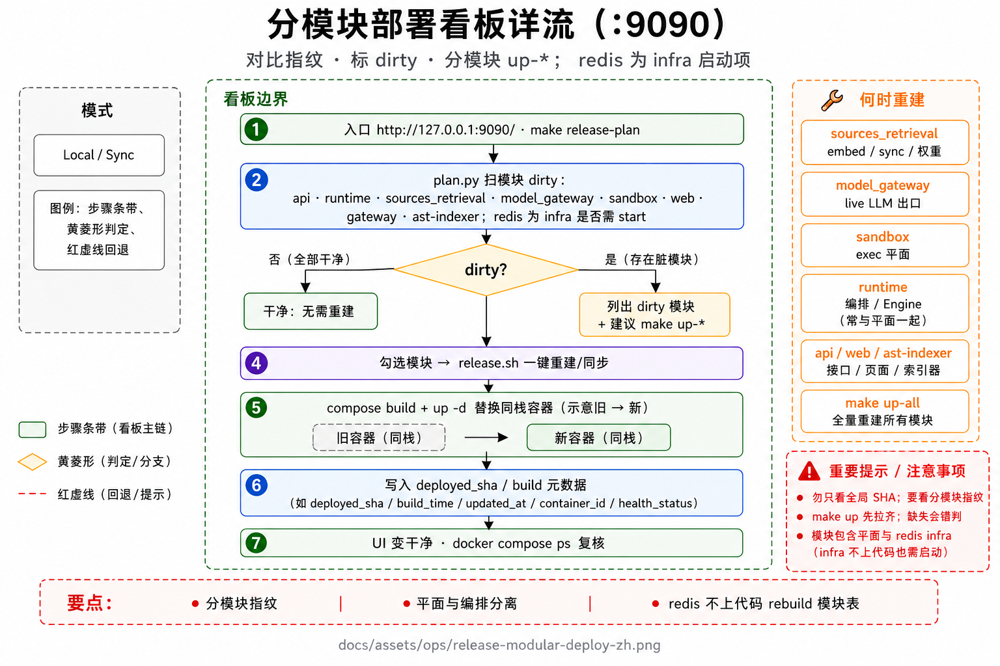
领域对象与一次提问的状态
用户心里是「一本书 / 一个仓库」。工程上拆成四层，避免把稿件世界和这一次对话缠在一起。
-
1
Work 是稿件和资料的世界根
大纲、正文、资料目录都挂在这里。换一条聊天线程，默认还是这个世界，不会因为压缩对话就把书拆散。
-
2
Session 是连续性容器
同一本书可以开多条聊天。它装着对话记录、策略、压缩摘要。换 Session 只换天线，不换默认 Work。
-
3
Turn 是用户点一次发送的业务闭环
从受理到完成 / 失败 / 取消。一次提问恰好对应一个执行实例。取消后再聊，是同 Session 里的新一次提问，不是把旧的续上。
-
4
Run 是这次提问真正在跑的执行实例
推理循环、断点、取消、租约都挂在它上面。等人点批准时状态变成「等待审批」，但还是同一个实例；批准后接着跑，不另起炉灶。
状态只能这样走：排队 → 运行 ⇄ 等待审批 → 完成 / 失败 / 取消。无人领取超时、租约丢失，都记在失败族里，不等于用户点了取消。
下图是一次提问的状态怎么走。等待审批是横跳，不是终态。
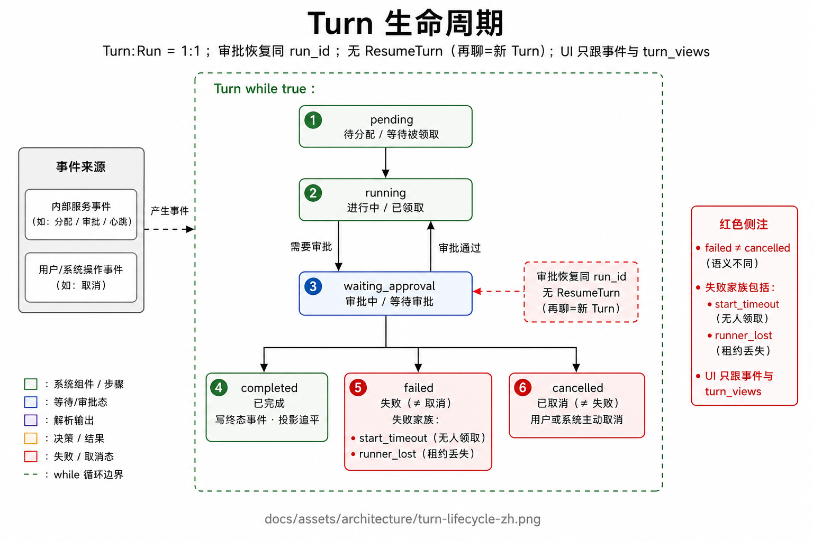
请求主路径（端到端）
用户点发送之后，真正「开始想」的时刻，不是 HTTP 202，而是 runtime 领到活之后发出的第一件业务事件。
-
1
工作台把这次提问 POST 给 api
api 先鉴权，确认会话、作品、场景都合法。队列已经堆满还没人领 → 直接 429，让客户端过会儿再试，而不是把 runtime 打满。
-
2
同一事务写下提问和执行实例，并通知领取
turns 和 runs 一起落库，还播一颗列表视图的种子。然后发数据库通知。客户端此时拿到 202：请求已被接受入队。
-
3
runtime 有空位才领，领了就续约
读出启动规格（场景、是否官方评测、模型密文等），发出「这题开始了」。从这一刻起才算业务首事件；首字到达时间看它经实时流到浏览器的时刻。
turn.accepted -
4
先确定性整理输入，再进推理循环
斜杠命令、@路径、附件在进模型前就处理完。纯本地命令（例如 /help）可以零模型结束。场景由 api/会话指定，不让模型猜「这是写作还是编码」。
-
5
循环里每件关键事都追加成事件行
思考增量、工具起停、等人批准，都写进事件表。api 监听到 turn_id，一边按序号回放给浏览器，一边更新列表快照。思考增量默认只走实时流，不进首屏快照。
-
6
工作台只消费事件和快照
界面不推断阶段。断线用 Last-Event-ID 续上。runtime 不对浏览器开流，也不靠进程内管道当事唯一源。
下图是这条链的控制流海报。编号圆和箭头对上面逐步。
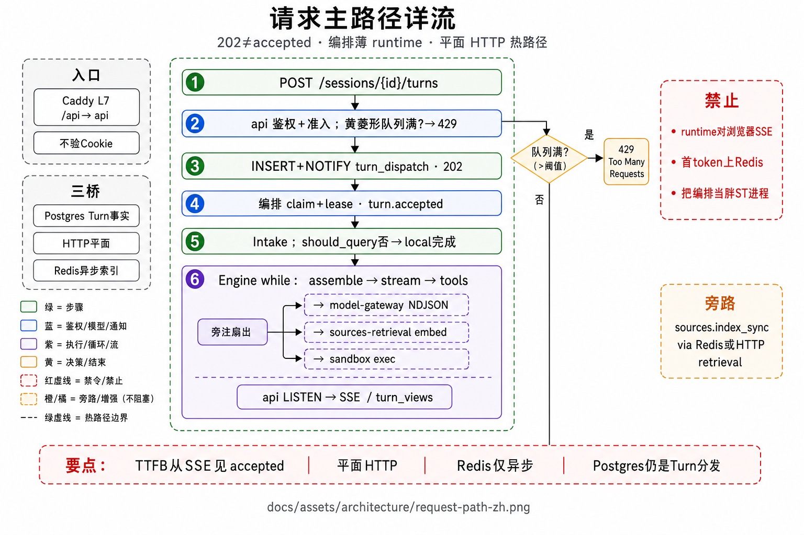
一次提问怎么被启动
api 尽快只做落库和打招呼；真正开工的是 runtime 来领。取消、批准、接受补丁走同一条命令通道，送给当前持有租约的那份 runtime。
-
1
客户端发出「开始这一次提问」
POST 到当前会话。api 校验会话、作品、场景。未领取队列已经满了就拒绝，并告诉客户端过会儿再试。
-
2
落库后立刻 202，同时通知有空的 runtime
提问和执行实例同一事务写入。这时浏览器可以开始听事件，但还没有「开始想」。
-
3
runtime 领到活，发出「这题开始了」
超过领取时限仍无人领 → 记失败（无人领取）。心跳断了无法安全续跑 → 记失败（租约丢失）。回退才是 api HTTP 把任务推到 runtime，推失败则客户端 502。
turn.accepted -
4
取消、批准、补丁决定送给正在跑的那份副本
写进命令表并通知。只有持有租约的 runtime 会消费。HTTP 内部命令只是兼容回退。
-
5
官方评测题开工即预批准写盘和执行
无人值守，不拦人审。编码评测可以在开题前等符号表 ready；产品对话仍然先受理，不等索引。
下图是这条命令链的海报。菱形「是否领取制」对应第 2–3 步。
services/api/app/routers/ · services/runtime/app/controller/turn_dispatch.py · turn_controller.py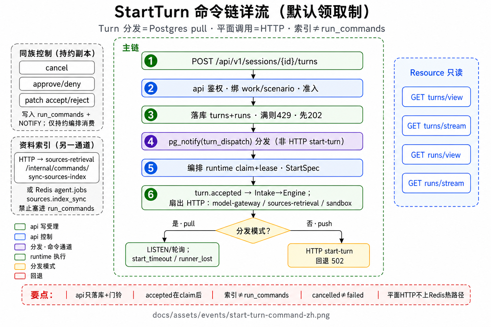
外壳管前后，循环管思考
TurnController 不进 while：它负责领活、读配置、整理输入、发出「开始了」、收尾写终态。真正反复「组窗 → 问模型 → 跑工具」的是 Engine。取消、超时、卡住看门狗旁挂全程，不是循环里新加的节点。
-
1
为这一步拼出模型窗口
先做卫生：超长工具结果头尾截断、同一文件的旧读取折成短占位、成串旧工具结果折短。窗口将满时再按 80% / 90% / 95% 三档加压。只改本步送给模型的窗，磁盘上的稿通常仍完整。
-
2
流式问模型，中途可以打断
还没吐出第一个字才允许重试。取消必须能打断等待和供应商 HTTP 流（大约几十毫秒检查一次）。
-
3
看出模型是在说话、在想，还是要点工具
三种增量分开写事件。思考增量默认只走实时流，不进列表快照。
-
4
点了工具：先问人允不允许跑，再执行，结果打回窗口
执行层可能整条改道（翻页读文件变成 read_file；评测题的 pytest 送进 Docker），工具名不变。编码还会更新「还欠测试 / 还欠 issue 例子」。然后存断点，回到第 1 步。
-
5
没点工具：若写完就收工却还欠验证，再催一轮
平台塞一条用户口吻提醒（菜单里点不到），再进一轮组窗/问模型。否则输出终稿，结束这次提问。编码场景最多催两类各一次；步数不够就省略。
编码循环最多约 150 步，写作为 40 步。Engine 不看场景名字；差别只在开工时装进哪些工具和提示词。
turn_controller.py · agent_engine.py · engine/state.py推理循环长什么样
加能力 = 增强工具或返回值，不改这条循环的形状。下图是权威控制流；上一页已经逐步说过每一格干什么。
进循环之前还有一道确定性整理：斜杠命令、@路径当场处理。不需要模型的命令直接结束。需要模型的，第一轮由它决定是直接回答还是先点工具。场景不由模型猜。
海报中间那条从上到下的箭头链，就是第 1–5 步。左右是旁注，不是第二套主链。
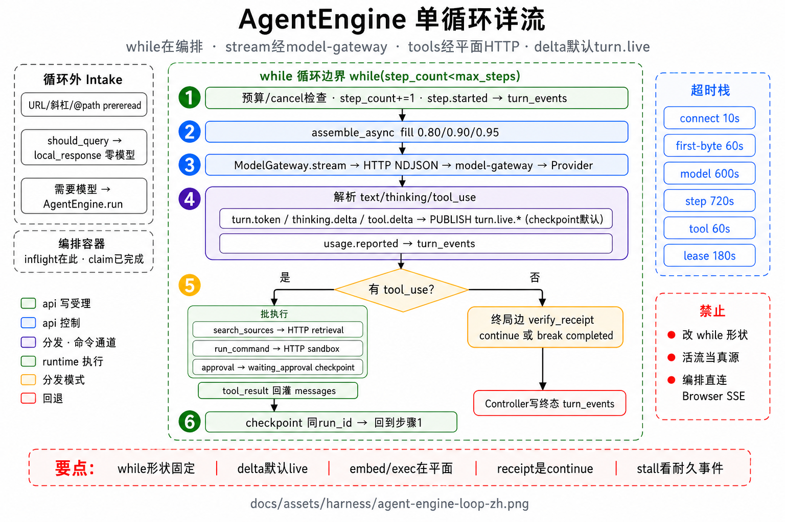
等人点头、点取消、再接着跑
「允不允许跑」和「跑起来能写哪」是两道门。官方编码评测把测试送进 Docker，是第三件事，跟这两道门都无关。
-
1
需要人批准时，这次提问停住，但执行实例还在
界面进入等待。断点里必须记住「还欠测试 / 还欠 issue 例子」，批准后才能接着验，而不是另起炉灶。
-
2
批准就续跑；拒绝则把原因写给模型
模型看到拒绝原因，可以改方案或收工。不是直接把提问标失败。
-
3
同一轮里批准过一次之后，同类操作可以免再审
写盘批准一次，后面同类写盘免审。命令行第一次仍要审，通过后本轮后续同类命令免审。进度清单更新不等于已经批准开工；计划进入「执行中」只预授权清单里的写盘，不等于命令行免审。
-
4
取消是终态，不等于跑失败
软取消请循环自己停；硬取消可以杀掉模型流和子进程。取消必须能打断等待重试和供应商连接。再聊 = 同会话里新的一次提问。
下图菱形是「要不要等人」。挂起后走同一执行实例的断点，不是新提问。
engine/state.py · controller/checkpoint_store.py · approval / cancel 路径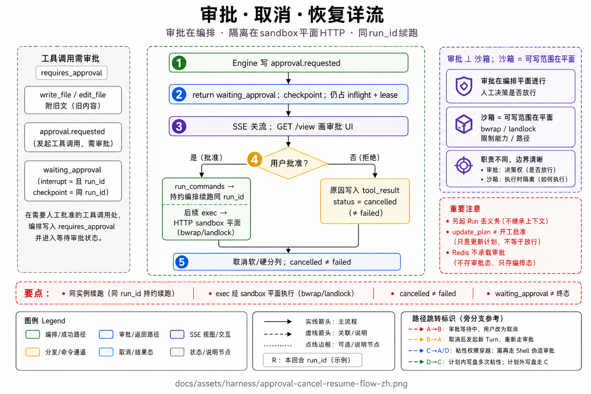
TurnState（审批挂起后必须还能接着验）
执行态 dataclass，经 checkpoint 序列化。审批中断后再续跑，不能把「还欠测试 / 还欠 issue 例子」弄丢。
核心记住：ids、messages、步数、取消、计划相位、这次是不是官方评测、写盘/exec 是否已预批准、哪些文件已经读过（组窗挤掉的允许再读一次）。易变垫底不焊进 system 提示。
编码还欠什么：成功改过代码之后有没有跑过测试；相关测试命令并集；最近一条复现命令和测试失败首条；从 problem.md 抽出的例子、失败签名、是否还要写再读往返 / 大小写折叠；这些义务是否已在最新一次编辑之后被成功命令覆盖；两类「想收工却还欠验证」的提醒是否已经发过。
services/runtime/app/engine/state.py四个场景，同一条循环
场景差在配置：开哪些工具、用哪份系统提示、要不要检索、审批松紧。推理循环里禁止按场景名字写分支；未知的挂载点启动就失败。
-
1
写作（默认）：大纲、起草、按差异改稿、搜资料
大约 40 步封顶。默认不碰情报语料目录。成稿靠卡片和少次有出处的检索。
-
2
编码：查找、改文件、跑测试全套；不搜资料
大约 150 步。找定义、看波及、改完再验写进这些工具的返回值。官方评测题把测试送进该题 Docker。
-
3
情报：资料与提示偏情报向
核实闭环还没做成产品。现状以这份场景配置为准，不要去草稿目录找「现行流程」。
-
4
协作：多助手（仍薄）
只能经委派开子执行，摘要打回父窗口。扩展只能走声明字段和固定的几个挂载点（组窗卡片、易变垫底、每步断点、收尾、压缩书签）。
scenarios/profiles/*.yaml · scenarios/registry.py · scenarios/hooks.py能力就是工具，坏习惯在执行层改道
RAG 禁止每轮预注入向量包；多 agent 只经 delegate。近两日把高频坏习惯焊进 handler，不靠 prompt 劝说。
agent / writing 白名单（节选）
agent: read_file · grep · edit_file · search_codebase · goto_definition · find_references · run_command · run_tests · read_lints · update_plan · …
writing: propose_patch · draft_section · search_sources · …（无 LSP 结构工具）
现行硬改道（代码已落）
不靠提示词劝。模型仍点原来的工具名，执行层改走该走的路：
- 用
cat/head/tail/sed -n/nl只读一个文件、没有管道和写盘 → 内部改成read_file（走大纲、已读登记、组窗折叠）。 - 官方编码评测题：pytest 后面即使跟着
| tail，也剥掉展示用管道，把完整输出丢进该题 Docker 镜像；禁止在裸源码树上 pip/uv；环境探测同样进镜像。 update_plan清单和上次完全一样 → 告诉它没变，不再刷一条工具完成事件。- 同一文件已经完整读过，再读同一覆盖区间 → 拒绝；组窗把旧读折叠掉之后允许再读一次。
read_file触预算才附大纲；Markdown/纯文本抽标题，Python 走 AST。
misc_tools.py · structural/*_redirect.py · tools/core/swe_solve_env.py每次问模型前，窗口怎么收拾
送给模型的不是全部历史原文。先走几乎每步都做的卫生，窗口将满再加压。通道分开：系统提示求稳定；工具说明单独一份；作品规矩和焦点是易变垫底；真正被压缩的是对话历史。
-
1
单条结果太长就头尾各留一半
中间丢掉，并留下「可以再读」的指针。默认大约 4 千字；刚刚成功读完的那份文件可以放到大约 3 万 2 千字，免得刚读完就被折没。
-
2
同一文件的旧读取折成短占位
只保留最近一次全文，更早的同路径读取留首尾约 300 字和行号。被挤掉的路径允许再读一次，避免模型再也打不开刚被折叠的文件。
-
3
成串已经完成的旧工具结果折短
不拆当前正在配对的这一次。这是卫生，不是「超限了才压缩」。
-
4
窗口占用到约八成：中间折成占位，留头和热尾
热区大约是窗口的 35%。还不够再升档：九成开始从最旧完整消息组删；九成五整窗做成结构化摘要（默认定增量，不在第一个字前再喊一次模型）。
长文被截断时会附标题大纲，让模型跳段而不是从第一行盲翻。编码场景仍然不用资料检索来导航长文。磁盘稿和网页聊天记录通常仍完整——压缩只作用于本步模型窗。
下图中主链就是卫生 → 填充率判定 → 三档加压 → 送给模型。
context/engine.py · structural/outline.py · docs/core/tools-and-context.md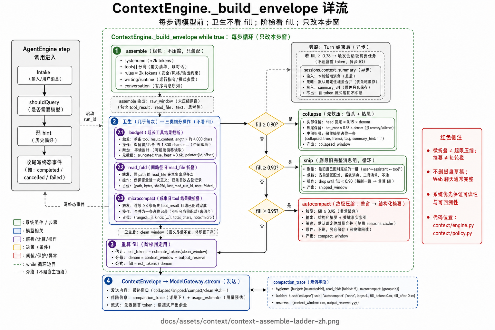
命令跑在哪：日常沙箱，评测进该题镜像
「人允不允许跑」过了之后，还要决定进程能碰哪。日常用户命令关在工作区里；官方编码评测题的测试不在这棵源码树上跑，因为评委用的是每道题自己的 Docker 镜像。
-
1
先过审批门
需要人点头的工具停在等待审批。评测无人值守在开工时就已经预批准写盘和执行。
-
2
若这是官方编码评测题：测试送进该题镜像
pytest 后面即使跟着
| tail，也剥掉只为好看的管道，把完整输出丢进镜像的/testbed。环境探测（python -c、版本）同样进镜像。禁止在裸源码树上 pip/uv。同一道题复用容器，只同步改过的文件。 -
3
否则选一层沙箱关住日常命令
优先用内核 Landlock；没有再用 bwrap；再没有就路径软限制，仍然不许爬出当前作品根。编码评测若要求断网，没有 bwrap 就硬失败，不漏到宿主机上网。
看板「SWE 评测环境就绪」= 挂上 docker.sock + 镜像已拉 + 每张镜像 python/pytest 冒烟都过。缺镜像不得当成模型零分。
下图菱形「是不是评测题」对应第 2 步；否分支才是日常沙箱。
swe_solve_env.py · test_run_redirect.py · sandbox.py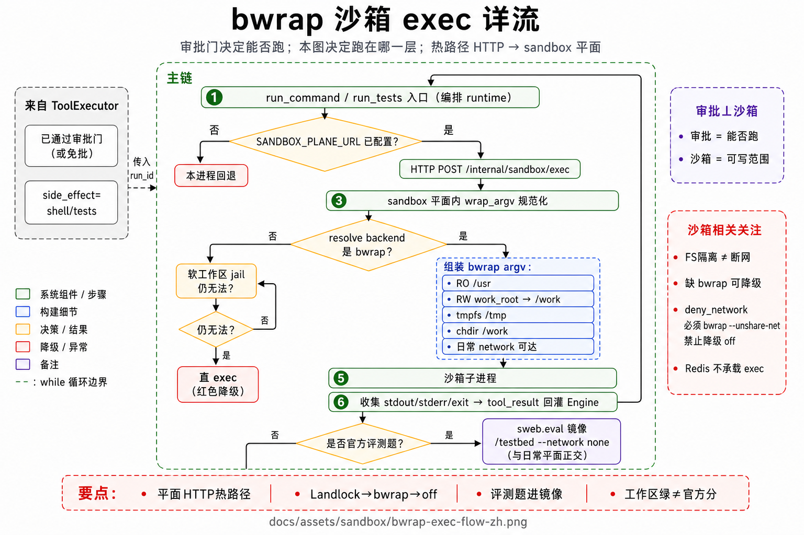
编码一次提问：从读题到交卷
模型已经会点查找、改文件、跑测试。平台不另发明导航工具，而是在返回值里塞进它没法假装没看见的事实。官方是否判这道题通过，看 Docker 里跑官方测试，不是看这些探针绿没绿。
-
1
读题，抽出符号名和失败样子
工作区里通常是
problem.md。不要先把仓库根目录列一遍当旅游。 -
2
先用 issue 里的最小例子复现坏现象
改完必须用同一条命令再跑。绿测通过仍不够，见后面「issue 例子还得再跑」。
-
3
按符号名找定义
走查找代码。先在工作区符号表粗筛候选文件/行，再让语言服务器确认「这就是这个函数」。确认过的才算找到。模型若直接 grep 一个符号名，执行层会整条改过来。模块名、形参查空是结构边界，不是索引没建好。
-
4
打开定义处再改一小段
文件太长被截断时带大纲，让它跳段。改成功时结果里带着：这段大概影响谁、这次写入的诊断、以及一条可复制的相关测试命令。平台不代跑这些测试。
-
5
改完再验：诊断、相关测试、邻文件、同一条复现
测试输出从未截断全文抽出失败第一条——模型常写
pytest | tail，页脚被吃掉时旧逻辑会静默没有摘要。 -
6
想交卷却还欠验证：塞一条用户口吻提醒再跑一轮
两类欠账：改过代码没跑测试；仓库测试绿了但 issue 例子没在最新编辑后再跑过。菜单里点不到这个工具。每类每轮提问最多一次。
产品对话不等符号表建完。界面进度条只报告扫到哪了，ready 之前不得画成已经能精确定位。写作/情报反过来：用资料检索，不打开这套查找/改文件能力。
下图上半是三列「找 / 波及 / 验」焊进已有工具；下半仍是 Engine 的 while，虚线汇入点工具。
structural/ · docs/core/tools-and-context.md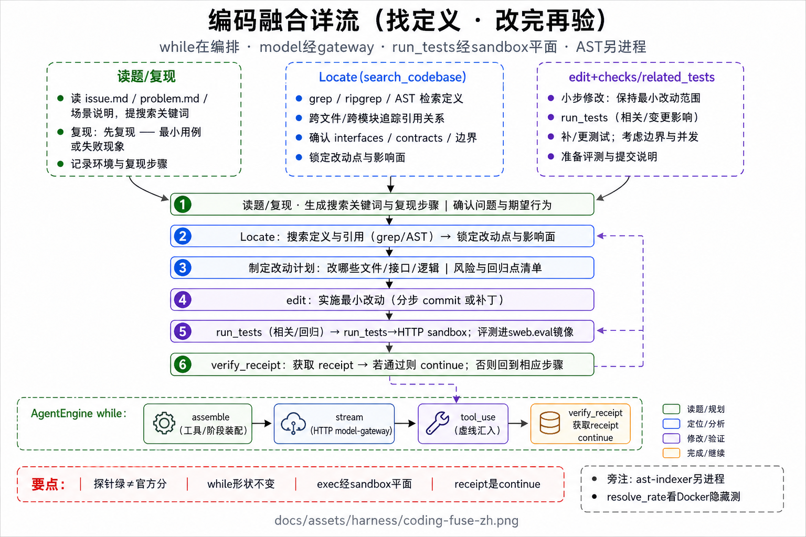
想收工却还欠验证时再催一轮
模型不再点工具、直接输出终稿时，平台检查两件事，缺哪条就往对话里塞一条用户口吻的提醒（菜单里点不到这个工具，对话记录里也不是 tool_result），落一条 tool.completed（verify_receipt=true），然后 continue 再进一轮。不挡取消/失败；每类每 Turn 至多一次；剩下步数不够（默认还要留 10 步）则省略。
第一类：成功改过代码之后还没跑过测试类命令。提醒里会引用已经给过的相关测试命令，以及最近一次测试失败首条（如果有）。
第二类：仓库测试已经绿了，但 problem.md 里写过的例子还没在最新一次编辑之后被成功命令覆盖。
审批挂起后再续跑，这两类「还欠什么」必须能从 checkpoint 恢复。第5轮：这条提醒发出率 0.80（第4轮曾掉到 0.20）；发出后真去跑测试的只有 0.25——催了仍常不跟测。
engine/verify_receipt.py · tests/test_wave4_verify.py绿测不够：issue 里的例子改完后还得再跑过
平台从 problem.md / PROBLEM.md / issue.md 抽出 issue 正文里出现过的例子。只复现 issue 写过的东西，不得把官方隐藏测试泄漏给模型。仓库测试绿了仍不够：这些例子必须在最新一次代码编辑之后被成功命令覆盖。
优先抽代码块、引用命令、REPL、输入输出样例。issue 里的失败签名如果还在输出里，不算覆盖。表/ASCII 一类「按某种 format 写出再读回」必须用同一套参数走一遍写再读。issue 明确说大小写不敏感时，还要用折叠大小写后的变体再练。
第5轮对照：14182 转绿，补丁同时改了写路径（header_rows）和读侧（data.start_line），与写再读义务同向，仍最慢（约 30 分钟，镜像跑测和复现占主导）。14365 回落，补丁只加了 re.IGNORECASE；issue 样例里没有小写 NO，大小写折叠这一门没能逼出官方隐藏的 roundtrip 测。
structural/issue_repro.py · RESULTS 第5轮相关测试命令、失败摘要、找定义怎么走
失败摘要。旧逻辑要求 pytest 尾行；模型常写 | tail，或输出被截断丢掉页脚，摘要就静默没有。现行从未截断全文旁路解析，兼容 -q / unittest / ERRORS；失败第一条（最多约 400 字）写进工具结果，模型想收工时的提醒也会引用它。冒烟从 0 走到第5轮 0.50，目标仍 ≥0.6。
相关测试命令。edit_file 成功后附最多 5 条「最像的测试文件 + 可复制 pytest 命令」。平台永不代跑。优先精确到单个测试文件（方便送进该题 Docker）。第5轮：命令都给到了（coverage 1.0），模型一条都没用（adoption 0.0）——下一抓手是采用率。
找定义。符号表粗筛 → 语言服务器在标识符列上确认定义。确认失败时不得把词面命中冒充成功；模块名这类非定义查询单独标出来，不计「索引故障」。产品对话不等符号表 ready；只有评测套件开题前等。第5轮融合成功率 0.625（n=8）；查找仍不是官方通过率的主因。
test_summary.py · related_tests.py · workspace_index/locate.py事实怎么从 runtime 到达屏幕
runtime 不对浏览器开流。它只往 Postgres 追加事件行；api 监听这些行，再分给实时流和列表快照。
-
1
关键节点只追加、不改旧行
每行带递增序号。大段正文进产物文件，事件行只留摘要和指针。插入之后数据库发一条「这个 turn_id 有新事」的通知。
-
2
api 听到 turn_id，放进队列
实时流和投影共用这一下触发。万一通知丢了，空闲大约 2 秒还会轮询事件表兜底。
-
3
实时流按序号回放给浏览器
思考增量只走这条路。大约 14 秒打一次心跳。断线用 Last-Event-ID 从断点续上，不用从头重放全部。
-
4
同一批更新列表/首屏快照
重连、刷新、终态读快照即可。思考增量默认不进快照，避免列表被内心独白撑爆。界面不自己猜阶段。
写主权：runtime 写事件、执行态、断点、对话真源；api 写快照、对外流、会话摘要（常异步）。两边没有分布式事务，短暂落后用事件序号修好。
下图左辅是写入，中主链是通知→监听→分流，右辅是禁止项。
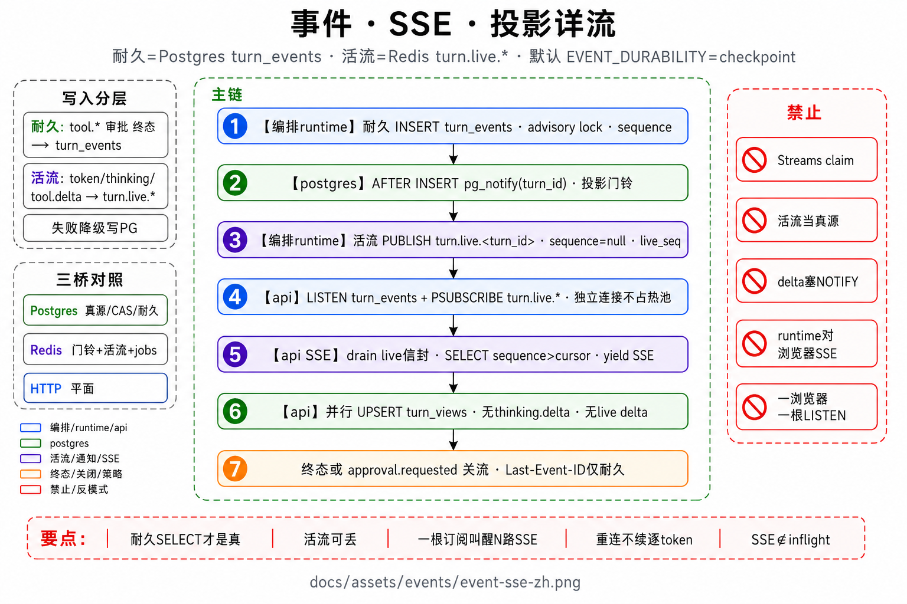
契约与目录
- OpenAPI / 事件 JSON Schema / 命令体 / DDL：
packages/contracts - Ops manifest：
packages/contracts/eval/ops_run_manifest.schema.json - 正文六篇：
docs/core/*· 专题docs/topics/*
组件地图
services/{api,runtime,web,bench,release-console}
packages/contracts/
eval/{golden,official,retrieval,swebench,…}
deploy/ · scripts/ · seed/ · workspace/
写作 / 情报怎么查资料
模型要点「搜资料」才会查。禁止每轮自动塞一包向量进窗口。编码场景没有这个工具，不能靠搜文档来找代码位置。
-
1
解析查询、条数、路径范围
没有资料目录就结束，不当成空库去建。不在查询这一下当场整库重嵌。每轮提问最多搜 3 次，超限这次直接拒绝。
-
2
切块车道和文档车道并行召回
切块：查询向量只算一次，再在向量索引和全文检索里找相近段落。文档：先找可能相关的整篇，再在篇内精看。两边结果稍后融合。
-
3
融合两路排名，必要时再按词面精排
交叉编码器默认关——召回还没稳之前，不在热路径上再加一截模型。权限不够的命中丢掉。没有命中才考虑退回宽松扫描。
-
4
带摘录的结果作为工具返回值打回窗口
下一轮组窗才能看见。禁止在提问开始时预注入召回包。审计漏斗给评测看板看，不进模型。
建库切块按大约 450 token、重叠 64（现行索引戳 13）。以前按 4000 字符硬切时，向量其实只代表段落前头，召回会撞天花板。宽表过长会拆成指针，全文仍在磁盘，用读文件再看。
下图上框是两条并行车道，下面宽条带和菱形才是融合、权限、有没有命中。
retrieval/chunking.py · chunk_split.py · embedder.effective_index_version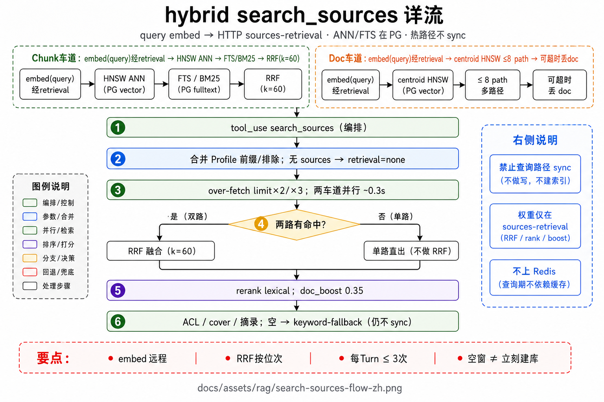
资料库什么时候建，什么时候不建
建库可以慢：启动后延迟同步、目录变更、上传、工作台点「同步资料库」。提问热路径上禁止当场建库。写作一轮结束后，api 可以排队做一次同步，不挡下一轮第一个字。
-
1
发现资料文件变了
按修改时间和大小轮询，不依赖 inotify（容器和虚拟机里更稳）。
-
2
按句子边界切成大约 450 token 的块，重叠 64
带上标题面包屑再算向量。宽表拆成行，让单元格能被搜到。全文检索索引一并更新。
-
3
写入向量索引，进度可查
换嵌入模型或切块规则会抬索引戳，必须重新同步。设置页能看到切块；符号表索引是另一条旁路，不要和资料库画成一块脏。
交叉编码器默认关。中英评测库分开建，分数不要混进同一栏。
下图中主链是触发 → 切块 → 嵌入 → 写入索引；左右是旁路和禁止项。
embedder.py · vector_index.py · workspace_index/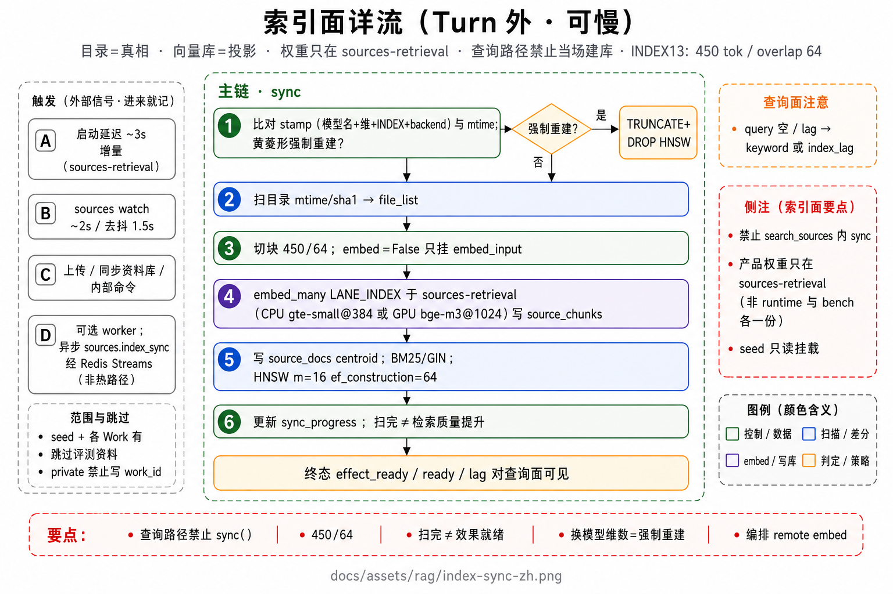
写作：先成稿，改稿走差异
用户心里是一本书。每一遍都是用户自己点的一次提问，平台不自动串成润色流水线。
-
1
（可选）先整理大纲
立人设、文风靠钉在作品上的卡片，通常不检索。
-
2
据材料新写时，按需搜几次资料，再起草
检索要带出处，次数有上限。不是资料越多越好。禁止每轮强制检索、禁止提问末尾再自动裁判。
-
3
改稿走差异：先给出补丁，人点头再落盘
局部改稿通常不再搜。同一轮提问里，批准过一次写盘后，同类写盘可以免再审。
-
4
（可选）润色、导出检查
仍然是用户下一次发送，不是后台自动接上。
下图中主链是意图 → 大纲 → 成稿 → 改稿；检索是按需旁路，不是每一步必经。
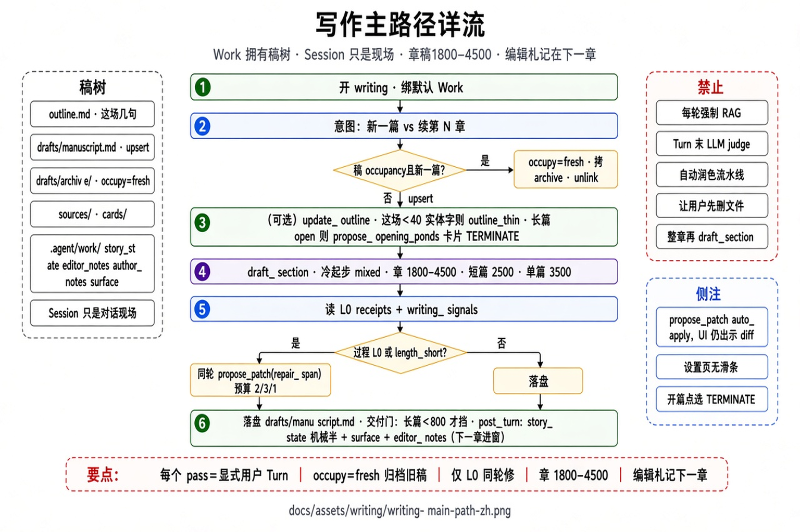
官方评测：走产品同一条提问路径
这是效果温度计，不挡代码合并。分数必须来自真实会话、真实提问、真实工具，禁止为刷分另开捷径。
-
1
检索套件：让写作场景真的去搜资料
英文小集和中文小集分开建库、分开记分，不要混进同一栏。多轮搜到的名单在评测侧再融合，看前 10 条好不好、前 100 条有没有金标。
-
2
长文套件：让模型读一篇长 passage，再抽出答案行
看的是读完能否对上金标，不是「会不会点搜资料」。编码场景仍然没有资料检索。
-
3
编码套件：checkout 一道 SWE 题，走完整提问
只在评测里等符号表 ready。模型改代码、跑测试（测进该题 Docker）。抽补丁交给官方评测程序。程序自己挂了标失败，不得粉饰成模型零分。
找定义揉合成功、失败摘要回灌、想收工时催一轮——这些只说明平台探针在线，不代替官方是否判这题通过。
下图是四套件怎么接到同一条产品提问路径。图看分支；上面逐步说每套件在测什么。
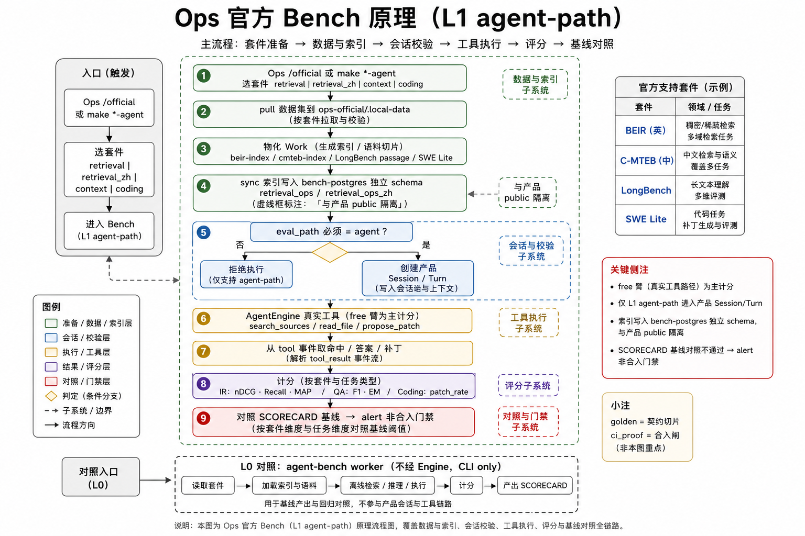
现行分数快照（对齐 RESULTS · 2026-08-17）
第5轮只跑编码（5 道题）
| 看什么 | 第4轮 | 第5轮 | 说明 |
|---|---|---|---|
| 官方判通过 | 4/5 | 4/5 | 还是 4 道过，但换了一道：14182 转绿、14365 回落 |
| 步数 / 墙钟 | 409 / 2854s | 202 / ≈2332s | 翻页改读文件、计划去抖、测进 Docker，步数腰斩 |
| 相关测试：给到了 / 用了 | 0.58→0.40 | 1.0→0.0 | 命令都塞进结果了，模型一条没跑 |
| 失败摘要写进工具结果 | 0.167 | 0.50 | 仍低于 0.6 的出口线 |
| 想收工时催了一轮 | 0.20 | 0.80 | 催完之后真去跑测试的只有 0.25 |
| 找定义揉合成功 | 0.36 | 0.625 | 不是官方通过率的主因 |
第4轮完整四套件（检索/上下文）
| 套件 | 主指标 | 值 |
|---|---|---|
| BEIR | nDCG@10 / R@100 | 0.4964 / 0.5252 |
| C-MTEB | nDCG@10 / R@100 | 0.6777 / 0.9167 |
| LongBench | F1 / EM | 0.5282 / 0.2667 |
升锚：retrieval 全量 · context limit=0 · coding n25+harness · promote-run（拒 n5）。
eval/official/baseline/RESULTS.md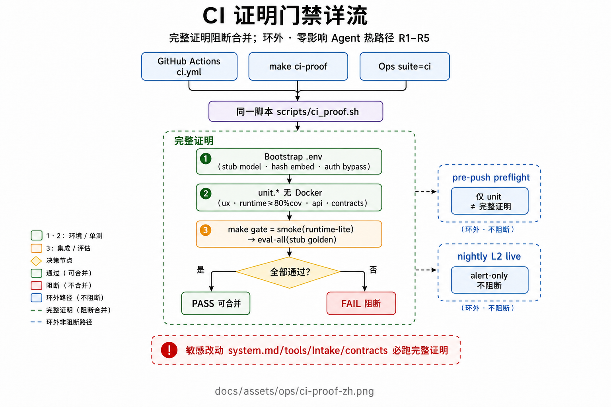
缺口（对照已落代码）
- 锚点：SCORECARD 主栏仍空；一切 smoke 只作方向盘。
- 编码通过：钉死 14365（issue 样例没有小写变体时，大小写折叠这一门逼不出官方隐藏测）；相关测试命令的采用率；催完之后真去跑测试的比例；失败摘要回灌率提到 0.6。
- 编码时长：继续压 14182 墙钟（镜像容器复用 / 拒在裸源码树上装包当验证）。
- Retrieval：BEIR R@100 第一验收位仍未稳过；R-5 暂缓；需更大 n 才下结论。
- Context：F1/EM 略低于第2轮重打锚；outline/Answer 口径已齐，待放量对照。
- 产品：intel 闭环 / collab 仍薄。
维护本导览
- 先改代码与契约，再改本 HTML 对应页（不另开分页）。
- 改流程图：在原海报风格上增补细节后，直接替换同名
docs/assets/**/*-zh.png。 - GitHub 上读仓库 README 的文档 Wiki。本地
make docs-tour；在线是 GitHub Pages 的/tour/。